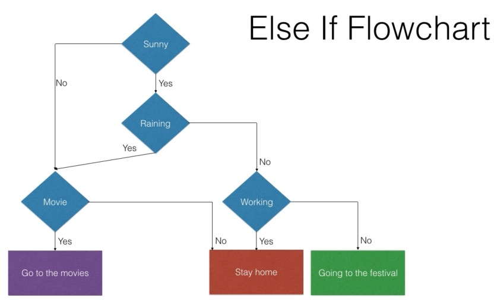

What is an If-Else Structure?
- beslissingen - voorwaardes - voorbeeld
Why Do We Use If-Else?
- leeftijd - wachtwoorden

How Does an If-Else Work?
The program checks a condition. - If true → run first block of code. - If false → run second block of code.
Example of an If-Else
Example of an If-Else
// A variable with an age
let age = 15;
// Check the condition
if (age >= 16) {
console.log("You are allowed to watch the movie.");
} else {
console.log("You are not allowed to watch the movie.");
}